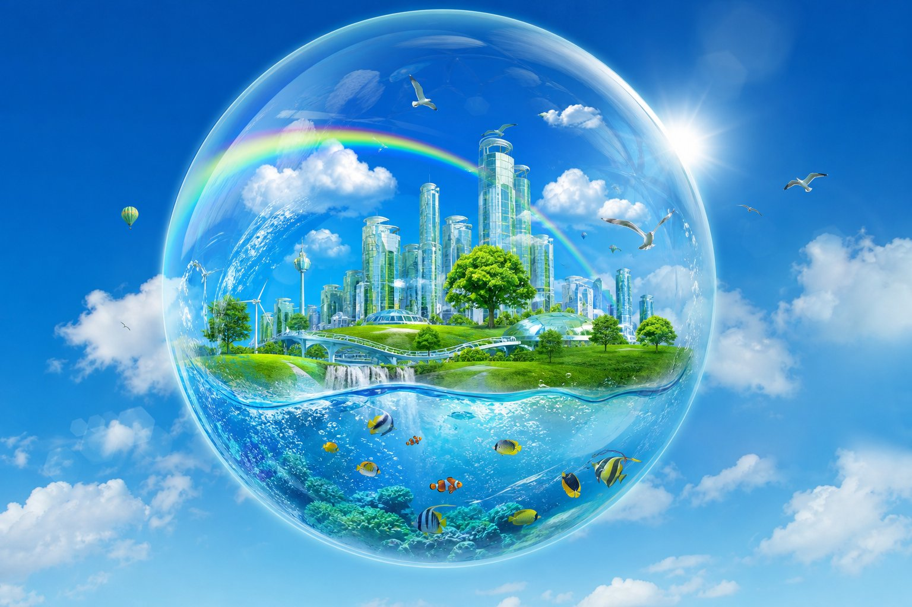
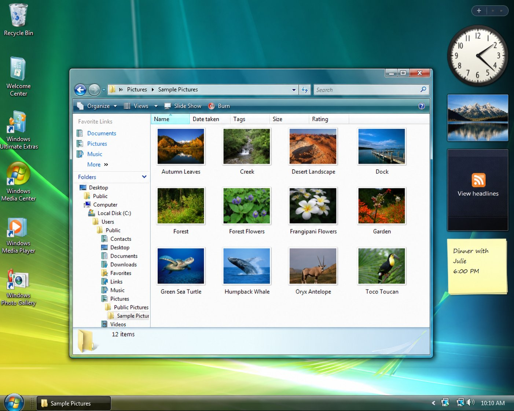
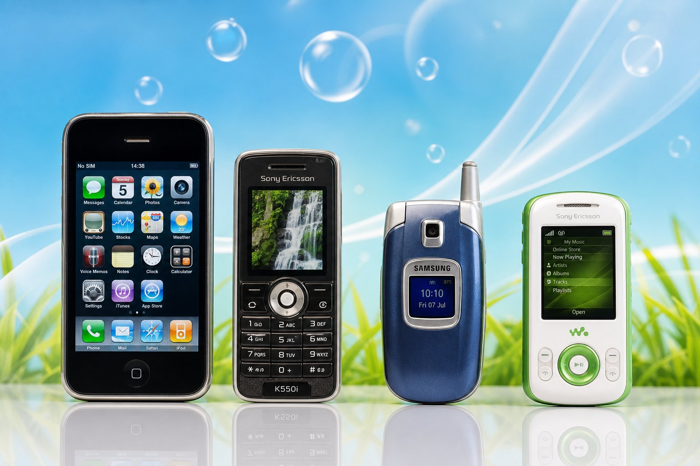

Maybe we don't miss the design.
Maybe we miss how the future felt.
2004 — 2013 — ∞
FRUTIGER AERO • The future we were promised • Built as time capsule
Не энциклопедия, а чувство. Технологии, которые хотели быть частью природы, а не заменой ей. Стекло, вода, трава, блики, рыбы и бесконечный оптимизм.

Grey ━━━━━● Bright blue / None ━●●● Maximum / Flat ━━━● Wet / 2026 ━━━● 2007
Ещё Y2K: серебро, хром, темно-синий металл. Но в лабораториях Microsoft уже рисуют Longhorn — будущую Vista. Apple показывает Aqua. Постепенно появляется стекло, зеленый, небо. Мир устал от холодного металла. Истоки эстетики связывают с ранними Longhorn/Vista-разработками и одновременно с более «материальными» интерфейсами Mac OS X.

Longhorn концепты показывают полупрозрачные окна, размытие, aurora. Появляются первые глянцевые Web 2.0 сайты. Природа начинает просачиваться в интерфейсы: листья, вода, трава.
Экран становится ярче. Всё происходит одновременно. Windows Vista закрепляет Aero Glass в массовой культуре, ранний iPhone использует богатый скевоморфный UI.
Windows 7 — пик отполированности Aero. Samsung, Sony Ericsson, все телефоны — глянец. Реклама рисует стеклянные эко-города, покрытые травой. Упаковки, игрушки, сайты — везде пузыри.

Последний яркий год. Для многих — образ будущего по умолчанию: чистый, зеленый, дружелюбный. Технологии как часть идеального мира, а не угроза.
Depth was removed. Textures disappeared. Interfaces became simpler. Windows 8, iOS 7 и другие продукты начали закреплять совершенно другую эстетику. Примерно к 2011–2013 глянцевый язык стал уступать flat и минимализму.
Сам термин Frutiger Aero появился уже постфактум — его ввели в 2017 году (Sofi Lee / CARI). Интернет внезапно понял, что у того чувства из детства было имя.
BAM. Возвращается музыка, пузыри, небо, трава. TikTok, YouTube, Pinterest — по крайней мере к 2022–2023 эстетика переживает заметное интернет-возрождение и становится вирусной.
Мы скучаем не по дизайну, а по тому, как ощущалось будущее. Оптимистичному, зеленому, стеклянному, с рыбками и пузырями.
Эстетика вышла далеко за пределы операционных систем — в рекламу, консоли, телефоны, упаковку, архитектуру.
23°C
Tomorrow: also sunny. And the day after: still sunny. Future is bright.
Click to feed • Fish follow cursor • Frutiger Aero pet
Now playing: Frutiger Aero Ambient 2007
This is 2007. Internet is made of bubbles, gloss and optimism. Websites have real buttons you want to press.
Best viewed with Internet Explorer 7
future.txt
Technology doesn't have to be cold.
Computer can be soft, human, alive.
2004 — 2013 — ∞
Warning: this file removes depth, gloss and happiness.
Идея была: технологии не обязаны быть холодными. Компьютер может выглядеть мягким, человеческим, живым, понятным. Будущее — это зелёные стеклянные города, а не киберпанк.
Depth was removed.
Textures disappeared.
Interfaces became simpler.
Маленьким экранам требовались более простые интерфейсы. Gloss плохо масштабируется.
Меньше графики → быстрее загрузка, проще разработка, лучше производительность.
Дизайн ушёл в сторону содержания. Content is king, chrome is dead.
Появился новый визуальный язык: Google Material, Apple flat, Microsoft Modern.
Windows 8, iOS 7 закрепили плоскую эстетику как стандарт индустрии 2013.
Название появилось уже после эпохи — его связывают с Sofi Lee / Consumer Aesthetics Research Institute в 2017 году.
TikTok, YouTube, Pinterest, Reddit. Эдиты, ностальгические видео, wallpapers, музыка. К 2022–2023 эстетика стала вирусной.
детство, старый компьютер, родительский ноутбук, Windows 7, школьные компьютеры, игры.
Frutiger Aero изображал технологии не как угрозу, а как часть идеального мира. Будущее было солнечным.
Не 🌆 киберпанк, а 🌿🌎💻 — технологии, которые растут вместе с природой.
Кнопки выглядели нажимаемыми. Иконки — физическими. Интерфейсы ощущались как предметы.
По экрану летает 30 пузырей. Лопай мышкой. Каждый — pop и частицы воды.
Кликай по поляне: сначала трава, потом цветы, деревья, стеклянный город, радуга.
Maybe we miss how the future felt.